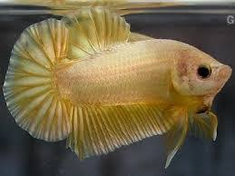

<!DOCTYPE html>
<html>
</html>
<!DOCTYPE html>
<html>
<head>
	<title>Ikan Cupang</title>
</head>
<body>
	<header>
		<h1>Cikampak Betta fish</h1>
		<link rel="stylesheet" type="text/css" href="style2.css">
	</header>
</body>
    <menu>
		<a href="index.html">Beranda</a>
		<a href="Sejarah.html">Sejarah</a>
		<a href="Jenis.html">Jenis</a>
		<a href="Budidaya.html">Budidaya</a>
	</menu>
	    <article>
	<ul>
	<h1>Jenis Jenis Ikan Cupang</h1>
	<h2>1.Halfmoon</h2>
	
	<p>Sesuai dengan namanya, ciri khas ikan cupang yang satu ini memiliki sirip dan ekor yang seolah-olah menyatu dan membentuk setengah lingkaran. Sangat indah, bukan?</p>

	<h2>2.Crown Tail atau Cupang Serit</h2>
	
	<p>Selain cupang Halfmoon, cupang Crown Tail ini juga memiliki ciri khas yang sesuai dengan namanya. Dinamakan Crown Tail atau ‘ekor mahkota’ karena ekornya yang akan membentuk seperti mahkota ketika dibalik. Ikan yang satu ini juga tergolong jenis ikan cupang yang mahal karena cukup langka di pasaran.</p>
	<h2>3.Double Tail</h2>
	
	<p>Cupang Double Tail yang ekornya bercabang dua ini sangat indah karena siripnya yang lebar. Tapi, ikan ini terkenal sulit dikembangkan, Ruppers. Hal itulah yang membuatnya langka.</p>
	<h2>4.Cupang Slayer</h2>
	
	<p>Cupang yang satu ini sering menjadi favorit banyak orang. Bagaimana tidak? Bentuk ekor dan sirip dari cupang Slayer sangat indah. Warna terang pada tubuhnya juga membuatnya semakin menarik.</p>
	<h2>5.Cupang Plakat</h2>
	
	<p>Cupang Plakat terkenal sebagai jenis ikan cupang aduan. Namun, warnanya yang cantik membuat banyak orang juga memelihara ikan ini sebagai ikan hias. Ciri khas dari jenis cupang ini terletak pada motif siripnya yang tegas.</p>
	<h2>6.Cupang Emas</h2>
	
	<p>Seperti namanya, cupang Emas yang memiliki nama lain Betta unimaculata ini memiliki warna kuning keemas-emasan. Ikan ini banyak ditemukan di sawah, sungai, dan rawa.</p>
	<h2>7.Dumbo atau Big Ear</h2>
	
	<p>Ikan cupang Dumbo ini sering disebut cupang Big Ear karena sirip telinganya yang sangat lebar seperti sayap. Persis seperti karakter kartun Dumbo, Ruppers!</p>
</ul>
</article>
	<footer>
		<p>Copyright &copy; 2021</p>
	</footer>
</html>